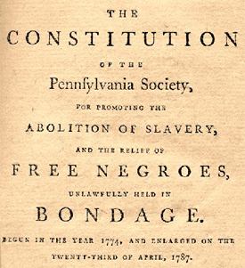
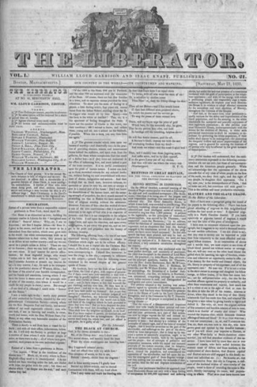
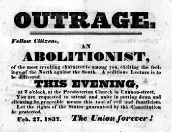
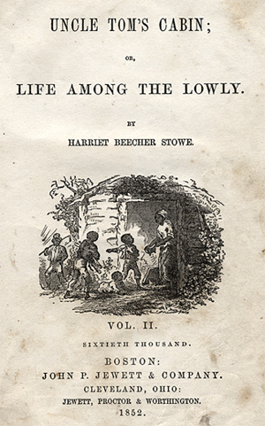

|
Abolition refers to the immediate and unconditional end to slavery. In the
United States, abolition movements offered varied plans of reform, with
conservative, moderate and radical approaches. Many abolitionists, although not
all, believed in racial equality; many also cooperated with international
efforts to halt slavery.
|

Pennsylvania, home to many
Quakers, was the first state to have a substantial
abolitionist presence.
|
Opposition to African slavery in North America dates to the 18th century,
when some Protestant denominations, particularly Methodists and Quakers,
condemned the practice. Until the Revolutionary War, abolitionist views were not
widespread among Britain's North American colonists. However, calls for liberty
and consent provoked some colonists to take abolition arguments more seriously.
During the 1780s, anti-slavery sentiment influenced the wording of the
Northwest Ordinance of 1787, which banned slavery from the future states of
Ohio, Indiana, Michigan, Illinois, Wisconsin, and Minnesota. By 1800,
Pennsylvania and all states north of it had abolished slavery, though largely by
gradual rather than immediate emancipation.
From Maryland south, slavery was far more important to existing economic
interests than in the North. The abolition argument did not find a large
audience in the tobacco-growing states on Chesapeake Bay (Virginia, Maryland,
and Delaware) and in the Carolinas and Georgia, where rice and indigo
cultivation flourished.
A few Southern planters did in fact seek to end slavery in the South. Thomas
Jefferson, for instance, argued that slave ownership bred habits of arrogance
and arbitrary power ill-suited to the needs of a Republic based on shared power
and popular consent. Jefferson also believed that African-American slaves posed
serious threats to all white people: a threat of revolt if kept in servitude,
particularly worrisome in wartime; and a threat of resentful hostility of a
landless underclass if set free. Slavery was wrong, Jefferson wrote, but
slavery could not end without expelling former slaves from North America. "We
have the wolf by the ears," Jefferson wrote, "we can neither hold him nor safely
let him go."

Thomas Jefferson, who criticized slavery, though he
was himself a slaveowner.
|
Jefferson, Madison, and others, both North and South, hoped that slavery
would end gradually. While the Constitution granted Congress no power to
abolish slavery, it did permit Congress to prohibit the importation of slaves
beginning in 1808. Without slaves from Africa and the West Indies, it was
assumed that prices for slaves would increase and that Southern plantations
abandon the practice. Gradually, former slaves would leave North America and
return to Africa. Jefferson's conviction that expulsion from North America would
be best for whites and blacks alike was shared by Henry Clay and other prominent
sponsors of the American Colonization Society.
Colonization faced serious opposition, however. As early as the 1790s, there
were voices raised against both gradual emancipation and colonization schemes.
Philadelphia African-Americans such as Richard Allen and Absalom Jones joined
Benjamin Franklin and others in the Philadelphia Society for the Abolition of
Slavery. In 1790, the organization petitioned Congress under Franklin's name to
abolish slavery throughout the country. Ominously, the petition earned a stern
rebuke from Southerners, whose views on slavery were less compromising than
Jefferson's. Thomas Tucker, a South Carolina representative, declared that such
a petition would "never be submitted to by the Southern States without a civil
war."
Despite Tucker's warning, calls for immediate abolition became more urgent
during the 1820s. A number of factors contributed to the growing unwillingness
of some antislavery activists to compromise. The first was the obvious failure
of gradual emancipation in the South. With the introduction of Eli Whitney's
cotton gin in 1793, slavery profitably expanded well beyond the plantations of
the Atlantic coast and into what would soon come to be called the Southern
"cotton belt."

The cotton gin, invented by Eli Whitney,
made Southern slavery viable into the nineteenth century.
|
As slavery expanded further, fewer Southern planters shared Jefferson's
doubts about slavery and more embraced a strong defense of the South's "peculiar
institution." The debates over slave-state Missouri's admittance to the Union
in 1819-1820, though they ended in compromise, demonstrated Southern resolve on
the issue, while revealing deep divisions within the North. Southern views
hardened further in the aftermath of a Virginia slave revolt led by Nat Turner
in 1832.
Abolition activists were also deeply influenced by the "Second Great
Awakening," a period of evangelical revivalism that peaked between 1810 and
1840. Those who opposed slavery on religious grounds condemned the practice as
nothing less than an abomination. These more militant attitudes crystallized in
the late 1820s and early 1830s, informing the work of such abolitionists as
David Walker (1785-1830), Lydia Marie Child (1802-1880), and William Lloyd
Garrison (1805-1879). Unlike Benjamin Franklin, these activists would not plea
or petition for emancipation; rather, they would demand it.
Walker, an African-American, was born free in North Carolina. Loathing the
South's poisonous atmosphere of slavery and oppression, he left for
Massachusetts, establishing a small business there while taking an active role
in the city's free black community. In 1829, Walker published a pamphlet
entitled "An Appeal to the Colored Citizens of the World." Targeting Thomas
Jefferson's remarks in Notes on the State of Virginia, Walker declared
that white Americans had proven themselves "unjust, jealous, unmerciful,
avaricious, and bloodthirsty... always seeking after power and authority." Only
abolition of slavery would free white Americans from their own degradation;
"what a happy country this will be if whites will listen."
Lydia Maria Child, a self-educated New Englander, came to public attention
with An Appeal in Favor of that Class of Americans Called Africans
(1833). Like Walker, Child's rhetoric burned. The races, she declared, were
equal to one another in every way. White people had enslaved black people only
because the white people had acted with "treachery, fraud, and violence."
Child's commitment to racial equality and her willingness to enter a public
arena generally closed to women outraged many Americans, including some who were
committed to the antislavery movement.
|

The Liberator was the foremost platform of abolitionism
for three decades.
|
William Lloyd Garrison was as uncompromising as Walker or Child. Introducing
The Liberator, his influential abolitionist newspaper, Garrison famously
declared, "I am in earnest, I will not equivocate, I will not excuse, I will not
retreat a single inch, AND I WILL BE HEARD." For Garrison, not even the
Constitution was sacred. Because the Constitution implicitly protected slavery,
Garrison thundered, the document was immoral. On July 4, 1852, in a
well-publicized demonstration, Garrison publicly burned a copy of the
Constitution, while shouting "so perish all compromises with tyranny!"
Abolitionists like Walker, Child, and Garrison asserted that the Constitution
and majority opinion both ranked well below a "higher law," God's law. Though
the Constitution itself prohibited any state from harboring an escaped slave,
abolitionists successfully urged several Northern states to enact "personal
liberty" laws that forbade state officials from assisting in the recapture of
escapees. Personal liberty laws enraged southerners, but were based on the same
states rights argument southerners themselves embraced in other circumstances.
By the 1830s, Southern planters and their Northern sympathizers came to see
abolitionism as a grave threat to their lives and property. Pro-slave
apologists condemned abolitionists as treasonous and violent extremists who
sought nothing less than a slave revolt, the murder of white people, and the
destruction of the white race. Such fears convinced president Andrew Jackson to
forbid the distribution of abolitionist literature through the mails. Congress
was persuaded to forbid the reading and debate of all antislavery petitions
brought to its attention. This happened despite a First Amendment guarantee of
the right to petition for redress of grievances. In the North, mobs often
pelted abolitionist speakers with everything from rotten food to rocks, burned
abolitionist presses and vandalized meeting halls. While Garrison was rescued
from a violent Boston mob, abolitionist Elijah Lovejoy was not so lucky, and he
was murdered by another mob in Alton, Illinois on November 7, 1837.
African-American abolitionist David Walker inspired particular hatred: $1,000
was offered for his dead body.
|

Abolitionists were often met with resistance, sometimes
violent resistance. This poster calls upon the citizens of Charleston, South
Carolina, to protest an abolitionist speech in their city.
|
Though abolitionists did not always face such violence, they remained a
distinct minority within the North well into the Civil War. Most white
northerners simply accepted as a matter of course that blacks were an inferior
race; many concurred with Southerners that slavery was essential both to protect
African-Americans from their own passions and to protect white people from black
people. Many northerners also feared that if slavery were ended, free blacks
would compete for jobs, forcing white workers to accept lower wages and worse
conditions. For these workers, African-American freedom would mean white
slavery.
Abolitionists were also divided among themselves. While black and white
abolitionists worked side by side in Garrison's American Antislavery Society,
differences of emphasis and organization ensured that African-Americans
supported their own distinct institutions. Though Garrison's Liberator
remained the preeminent abolitionist journal among white Americans, Frederick
Douglass's North Star was widely read among free African Americans. Black church
and community groups independently organized support for escaped slaves; under
activists such as Harriet Tubman, these groups became the foundation for the
network of escape routes, "conductors" and safehouses called the "underground
railroad."
Abolitionists also differed over strategy. In 1840, abolitionist Lewis
Tappan split with Garrison's American Antislavery Society and established a
rival organization, the American and Foreign Antislavery Society. Tappan and
others in the new group were dismayed at Garrison's alleged opposition to
religion, support for women's equality, and reliance on "moral suasion" rather
than direct political action to end slavery.
Gender also divided abolitionists. Like Lydia Child, abolitionists such as
Lucretia Mott, Susan B. Anthony, and Elizabeth Cady Stanton found a cool and
sometimes hostile reception from the men who led abolitionist organizations. To
fight against slavery, they concluded, they had to emancipate women as well.
Though some male abolitionists voiced contempt for feminism, others, such as
Frederick Douglass, provided active support.
Despite these divisions, abolitionism grew stronger, particularly after the
Mexican War of 1846-48. The conquest of Mexican territory reopened an angry
debate over the expansion of slavery last heard during the debates leading to
the Missouri Compromise of 1820. In the wake of United States victories,
congressman David Wilmot introduced his "Wilmot Proviso" to prohibit slavery in
the any lands seized as a result of the war. Though ultimately defeated,
Wilmot's bill spread anti-slavery sentiment.
Most Americans who opposed slavery in the territories were not abolitionists,
but "free soilers." Free soilers did not oppose slavery in the South, but
believed that if slavery was permitted in the West, wealthy Southern planters
would buy up the best farmland. Northern farmers of more modest means would
have nothing. Free soilers shared with abolitionists a deep disdain for what
they both characterized as the South's "slaveocracy."
Abolitionists were divided on the wisdom of working with free soil Democrats
and Whigs. William Lloyd Garrison refused to work with anyone who sought less
than full and immediate emancipation. Tappan and other abolitionists disagreed.
Abolitionists had already experimented with electoral politics in the form of
the Liberty Party, whose support had grown from 7,000 presidential votes in 1840
to 60,000 in 1844. In 1848, many abolitionists joined the Free Soil party,
which garnered more than a quarter million votes for presidential candidate
Martin Van Buren. When the Kansas-Nebraska Act shattered the Whig Party in
1854, most northern Whigs joined free soilers and abolitionists to establish the
Republican Party. Though the Republican Party officially embraced only free
soil ideas, abolitionists now had a strong voice in a mainstream political
movement.
|

Harriet Beecher Stowe's novel Uncle Tom's Cabin
was the most effective anti-slavery book ever written.
|
Even so, Garrisonian "moral suasion" remained vital to the Abolitionist
cause. Harriet Beecher Stowe's popular 1852 novel Uncle Tom's Cabin
condemned the abuses of slavery in vivid prose. As many as a third of literate
Northerners read Stowe's book. African-Americans who had escaped slavery now
found large and enthusiastic audiences for their speeches and books.
However, moral suasion was clearly not going to end slavery by itself.
During the 1850s, the debate over slavery provoked increasing violence. From
Preston Brooks' assault on Senator Charles Sumner in the Senate chambers to
"Bleeding Kansas," and from John Brown's attack on the federal armory at
Harper's Ferry to Southern calls for secession, slavery had become the most
divisive national issue. In 1860, hoping to allay the fears of white
Northerners, the Republican Party passed over William Seward, an abolitionist
sympathizer, and instead nominated Abraham Lincoln, a free soiler who had
condemned John Brown's raid and promised to protect slavery where it already
existed.
At the beginning of the Civil War, most white Northerners--and certainly most
Union soldiers--still opposed abolition of slavery. Lincoln himself entertained
the idea that the United States might gradually end slavery, and that former
slaves might be "returned" to Africa. Yet Garrison, Douglass, and other
abolitionists urged Lincoln to reject gradualism, reject colonization, and
reject anything short of full citizenship. Throughout the Civil War,
abolitionists struggled to ensure that African-Americans could serve as combat
soldiers in the Union Army, and that those soldiers would earn the same pay as
white soldiers. Abolitionists also lobbied for other causes: that Union
commanders end slavery in Southern territories they occupied, that the U.S.
government grant captured plantation lands to former slaves, and that Congress
declare and protect the civil rights of African-Americans.
The 13th amendment brought the end of slavery in 1865, and abolition's
mission had been fulfilled. Some former abolitionists, their life's work
accomplished, retreated from politics. Others remained active within the
Republican Party. Still others joined moral crusades modeled after abolitionism
and seeking reform of other elements of American life. However, veteran
abolitionists found themselves divided in their approaches to Reconstruction and
an industrializing economy. As a political movement, abolition was finished.
Even so, fundamental issues arising out of race were never fully resolved by the
Civil War. In many ways they remain as vital to American society today as they
did when abolitionists first raised them.
Source: Joan Waugh, ed., Facts on File Encyclopedia of American
History: Civil War and Reconstruction, 1856 to 1869 (New York: Facts on
File, 2003), 1-4.
|